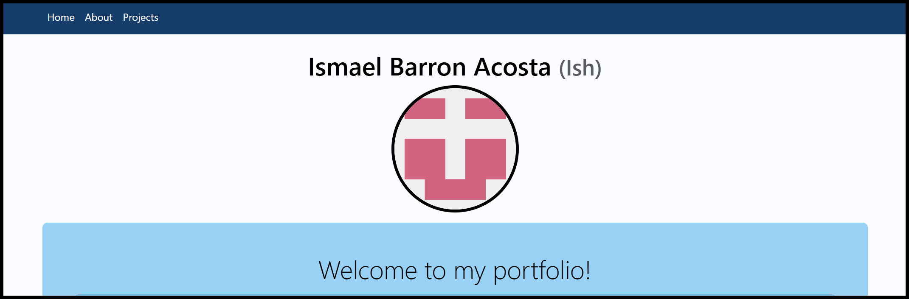
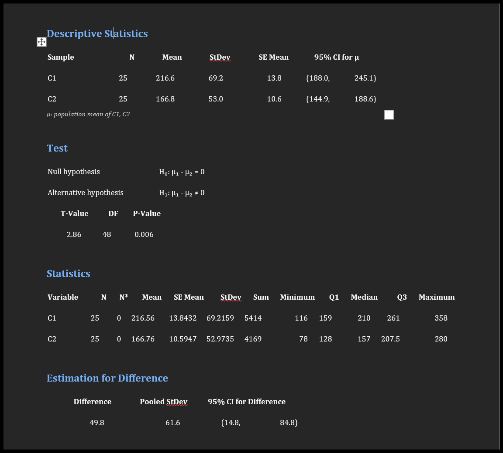

Projects
Project 1: Portfolio Website
Created a personal portfolio website using HTML, CSS, and Bootstrap to showcase my skills, projects, and experiences. The website features a clean and responsive design, ensuring optimal viewing across various devices. It includes sections for an about me and project highlights.
Project 2: Statistical Analysis of Abstract Words in Books
Conducted a statistical project by selecting 25 random books from the Aururia Library and counting the number of abstract words in each book. Calculated descriptive statistics such as mean, standard deviation, and variance for the dataset. Performed hypothesis testing, including null and alternative hypotheses, and computed t-value, p-value to analyze the significance of the results. This project was a collaboration between myself and another student, requiring us to use both MATLAB and R for data analysis and visualization.